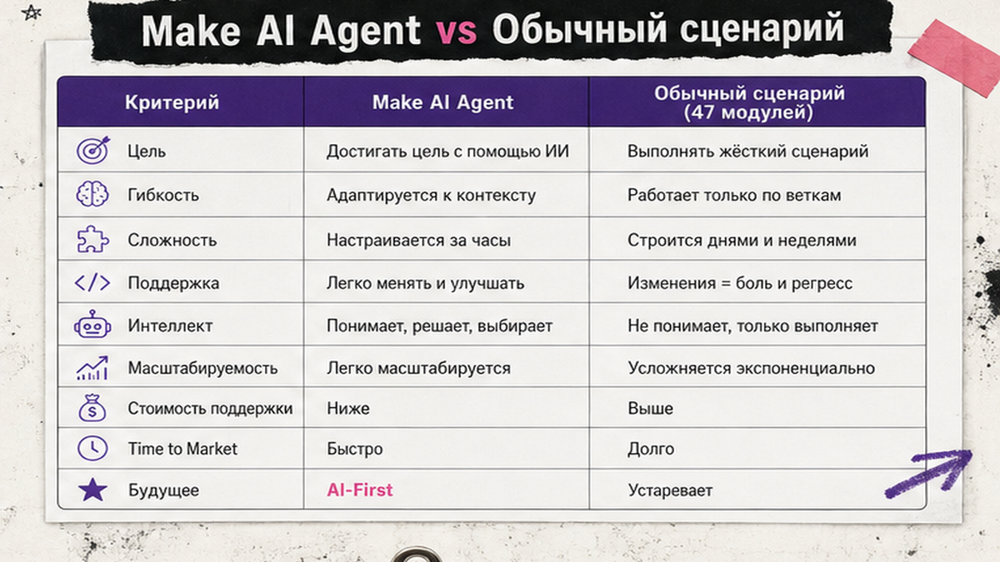
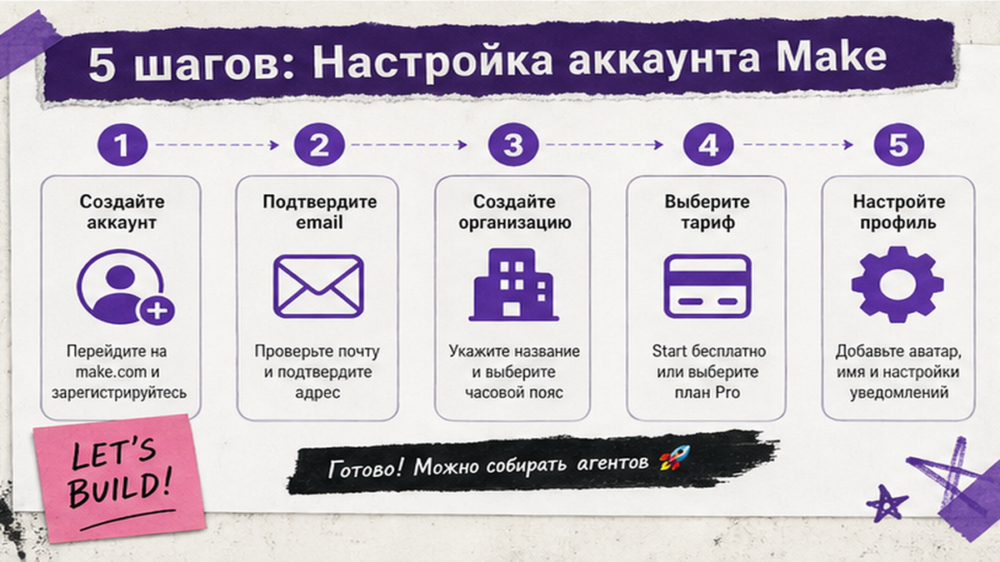
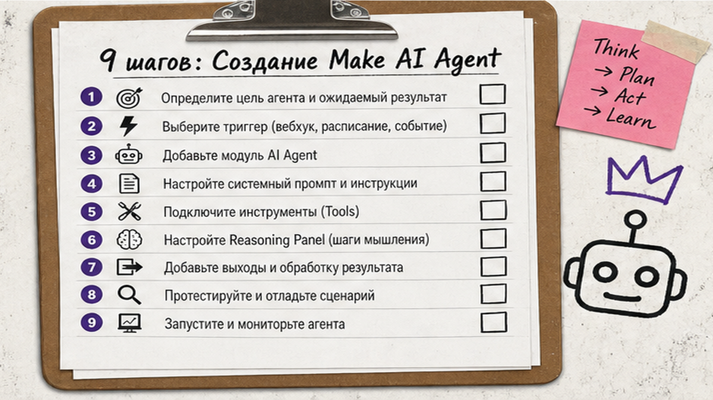

Клиенты пишут в разном формате, а вы вручную сортируете письма и лиды? Make AI Agents – это "умный диспетчер" на том же канвасе, где вы уже собираете сценарии: он читает неструктурированный текст, сам выбирает действия и показывает ход мыслей в Reasoning Panel. Ниже – настройка Make AI Agents с нуля: Instructions, Model, tools с Return output, тест в in-canvas chat и чек-лист перед продом. После гайда вы соберёте первого рабочего агента для поддержки, лидов или отчётов без кода.
TL;DR / Быстрый инсайт: Make AI Agent – модуль на канвасе Make, который принимает сообщение, решает какой tool вызвать и возвращает ответ. Схема MVP: триггер (Gmail/Webhook) → Run an agent (new) → 2-3 tools с Return output → ответ клиенту. Агент нужен при "свободном" вводе; фиксированный пайплайн – обычный сценарий. Тестируйте в Reasoning Panel, следите за credits в Credit usage history. Make AI Agents доступны на всех тарифах, интеграций 3000+.
Make AI Agent – "мозг" внутри сценария Make.com. LLM (языковая модель) только генерирует текст; агент ещё выбирает tools: Sheets, Slack, CRM. Tool – модуль Make или сценарий с Return output в конце. С февраля 2026 – next-gen UI: in-canvas chat, Reasoning Panel. Сравнение с n8n – в гайде по n8n AI Agents.

Главная ошибка – ставить агента там, где хватит линейного workflow. Make прямо пишет: агент – когда нужны суждение и неструктурированный ввод (письмо, голосовое, PDF, хаотичный чат). Сценарий – когда шаги заранее известны и повторяются одинаково.
| Критерий | Make AI Agent | Обычный сценарий Make |
|---|---|---|
| Входные данные | Свободный текст, файлы, мультимодал (PDF, CSV, картинки) | Структурированные поля, webhook, таблица |
| Логика | Модель выбирает tools по контексту | Фиксированная цепочка модулей |
| Отладка | Reasoning Panel, in-canvas chat | История выполнения по модулям |
| Расход credits | Variable: AI-модули + каждый tool | Предсказуемее: 1 credit на стандартный модуль |
| Пример кейса | Классификация заявки + ответ из базы знаний | Новая строка в CRM → письмо → Slack |
Делайте: начните с одного бизнес-кейса – поддержка, квалификация лидов или сводка отчётов. Не делайте: заменять простой импорт из формы агентом "на будущее".

Make AI Agents на всех тарифах. Free: 1 000 credits/мес, интервал запусков от 15 минут. Core от $12/мес, Pro от $21/мес (pricing.make.com, июнь 2026). Подключите Make AI provider или свой API key (OpenAI, Anthropic) на Pro+ – ключ как пароль к облачной модели.
Делайте: на первом агенте включите Credit usage history и поставьте лимит уведомлений. Не делайте: запускать сложного агента на Free, если нужен ответ клиенту быстрее чем раз в 15 минут.

Схема workflow:
Триггер (Gmail / Webhook / Slack) → Make AI Agents: Run an agent (new) → [Reasoning Panel: выбор tool] → Tool A: Google Sheets → Tool B: Call scenario с Return output → Ответ клиенту / запись в CRM
MCP – стандарт подключения внешних API как tool; для MVP хватит модулей и Call a scenario. Подробнее – в курсе Make.com на kv-ai.ru.
Tool = сценарий с Return output; агент вызывает по name + description. Частые сбои: не тот tool (дубли descriptions), падение tool (error handler), циклы (слишком много tools), пустой ответ (проверьте output mapping).
Делайте: после каждого теста правьте descriptions, не Instructions целиком. Не делайте: давать агенту tool на удаление данных или платежи без human approval.
Prod-сборка: map message из триггера → Run an agent → ответ (Gmail Reply, Slack message, HTTP в CRM). Где поддерживается, передайте thread ID для контекста диалога – клиент пишет повторно, агент помнит нить.
Human-in-the-loop – пауза перед опасным действием. Платежи, публикации, удаление данных – только через approval-модуль или стоп-флаг.
Чек-лист перед Active (12 пунктов):
| Критерий | Make AI Agents | n8n AI Agent |
|---|---|---|
| Запуск | SaaS, регистрация за минуты | Cloud trial или self-host (Docker/VPS) |
| Интеграции | 3000+ apps, visual builder | 400+ нод, MCP, глубокий AI stack |
| Отладка | Reasoning Panel, in-canvas chat | Logs AI Agent, execution history |
| Данные | Облако Make | Self-host возможен (Community Edition) |
| Биллинг | Credits; AI variable | Executions (run workflow = 1 execution) |
| Кому подходит | No-code, быстрый B2B MVP | Команды с DevOps, кастомные API |
Итоговый вердикт: Make AI Agents – если нужен первый агент за день без сервера и с прозрачной отладкой на канвасе. n8n – если данные должны остаться on-premise или нужен LangChain-уровень кастомизации. Подробнее – в гайде по автоматизации n8n.
Library of Agents и MCP – в курсе Make.com; вопросы – @maya_pro.
Материал проверен: эксперт Артур Хорошев (CEO Maya AI, автор курса по Make.com и вайбкодингу).
Достоверность данных: тарифы, credits и возможности Make AI Agents сверены с официальными страницами make.com и help.make.com на июнь 2026 года; семантика запросов – по SERP и карточке темы (точные показы Вордстата будут добавлены после восстановления MCP).
Агент сам выбирает tools по контексту сообщения; сценарий идёт по фиксированным модулям. Откройте таблицу в начале гайда: если вход структурирован – оставьте линейный workflow.
Нет. Агенты собираются в visual builder на том же канвасе, что и классические сценарии. Зарегистрируйтесь на make.com, откройте Scenario Builder и модуль Run an agent (new).
Add tool в настройках агента → выберите модуль платформы или Call a scenario. Для сценария-tool добавьте Return output в конце, иначе агент не получит данные.
Стандартный модуль – 1 credit за действие. AI-фичи потребляют variable credits в зависимости от объёма. Не гадайте: смотрите Credit usage history после тестов, не фиксированные цифры из сторонних блогов.
Make – SaaS, 3000+ apps, Reasoning Panel, быстрый старт. n8n – self-host, executions, глубокая кастомизация. Сравнительная таблица выше; детальный разбор n8n – в статье B02.
Уточните descriptions (до ~240 символов), уберите дубли и лишние tools, прогоните три теста в in-canvas chat и смотрите Reasoning Panel после каждого прогона.
Любые платежи, удаление данных, публикации от имени компании. Добавьте approval-модуль или стоп-флаг перед рискованным tool – не полагайтесь на "агент сам разберётся".